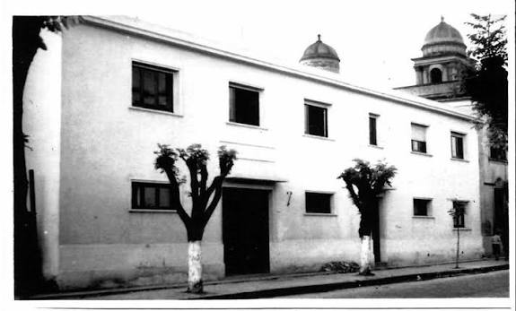
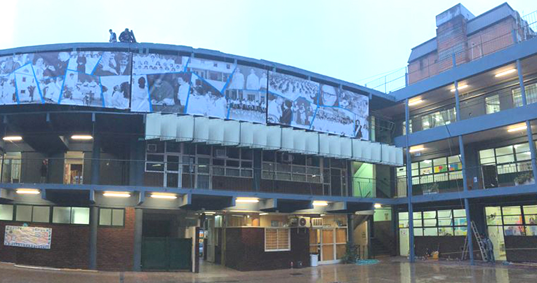

Título
Bachiller en Economía y Administración
Imágenes del establecimiento


Tareas realizadas
- Fundamentos Contables y Financieros: Comprensión de estados contables básicos, registros operacionales, costos y nociones fundamentales de administración de empresas.
- Análisis Económico: Capacidad para comprender e interpretar variables macro y microeconómicas de la coyuntura local e internacional.
- Herramientas de Gestión Empresarial: Manejo de software de oficina (Word, Excel, PowerPoint) aplicados al análisis de datos comerciales y presentación de proyectos.
- Responsabilidad Social y Ética Profesional: Formación integral enfocada en el trabajo en equipo, la toma de decisiones éticas y la preparación metodológica para estudios de nivel superior.
Período
Marzo 2013 - Diciembre 2018